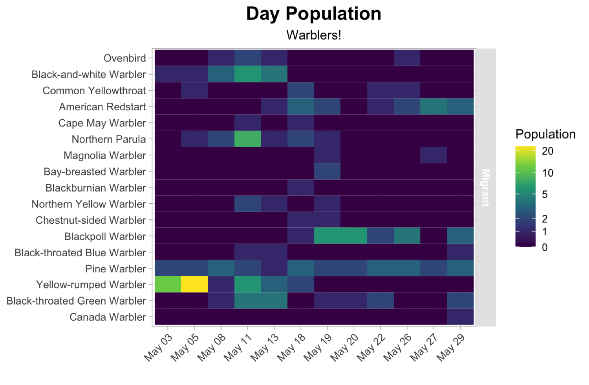
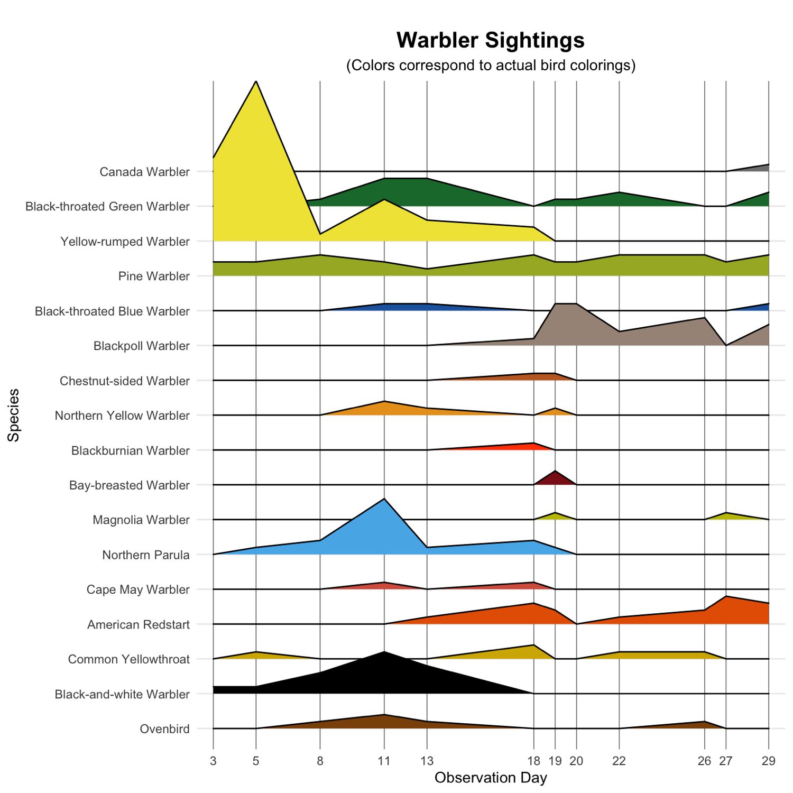
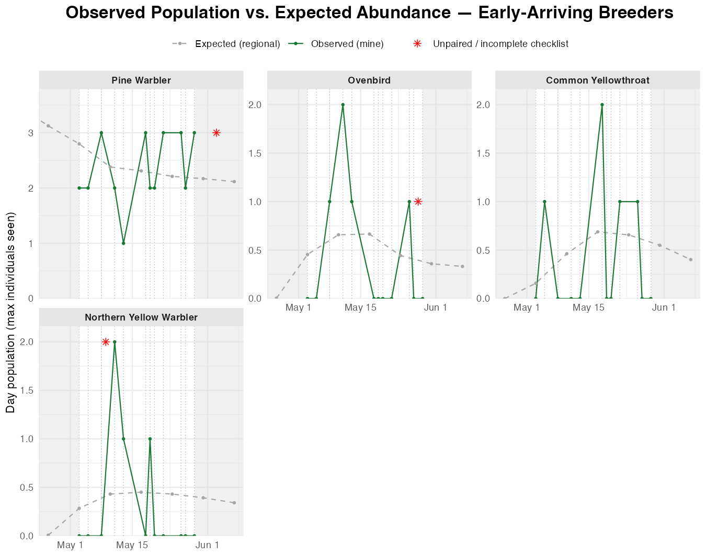

Deep dive
The warblers
Seventeen warbler species were recorded. Almost all going through Boston are on their way to breeding grounds in New Hampshire, Maine, and Canada. Some species breed in Western and Central Massachusetts.
Observations
You can see a very clear arrival-peak-decrease pattern for the Black and White warbler, and Northern Parula
I missed the arrival of the yellow-rump warblers, so they start out in large numbers. They are numerous and very social warblers, so it's not uncommon to see huge groups like I did in early May.
American Redstart seem to have arrived in two waves (increase-peak-decrease). But take this with a grain of salt because their songs are very weak and ambiguous, so I may have missed quite a few.
Multiple pairs of pine warblers were likely breeding at this park. After my survey ended, I observed at least one recently fledged young.
The Northern Yellow Warbler is a very common species, but it likes wetlands, which my park does not have. Otherwise its numbers would have been much higher.
The chunk of warblers in the middle that I only saw a few times are relatively uncommon, and exciting to see! (Also, they're cute)
It was clear when a huge group of Blackpoll warblers came in during the May 18/19th wave -- they were everywhere! They sound like very quiet squeeky wheels and like the tip top of the canopy. These I heard almost exclusively. They were too far away and hidden by leaves to spot.


Sorted by breeding status & arrival timing
No warblers I observed fall into a fourth group, mid/late-arriving breeders —
Early-arriving breeders
The only warblers that stop and stay rather than pass through — they show up early, then hold a roughly flat line across the whole month.
Pine Warbler · Ovenbird · Common Yellowthroat · Northern Yellow Warbler
Definitions
- Observed Population: my own count; the highest number I saw on that day at either timepoint.
- Expected Abundance: Derived from ebird model of expected counts; in order to overlay cleanly with my observations, I normalized the expected abundance to its own mean, then normalized to the mean of my observations.
* Unpaired, Incomplete Checklist, red asterisk* : These are observations made outside the rigidity of my study design, included to show continued species presence. Most are after my study ended. In an ideal world, I would redo this and extend the study a week into April and June. In order to not over-estimate, only one-offs observations or shorter walks in the exact same area were included.
NOTE TO SELF: Abundance still seems misleading. I need to make this clearer
Claude: rescaled = expected ÷ mean(expected) × mean(observed)
A double axis wouldn't work here because every panel uses its own y-axis (`scales = "free_y"`, since a species I see 2 of and one I see 30 of can't share a scale). A secondary axis is one shared transform for the whole plot — it can't be refit per panel the way this rescaling is.
